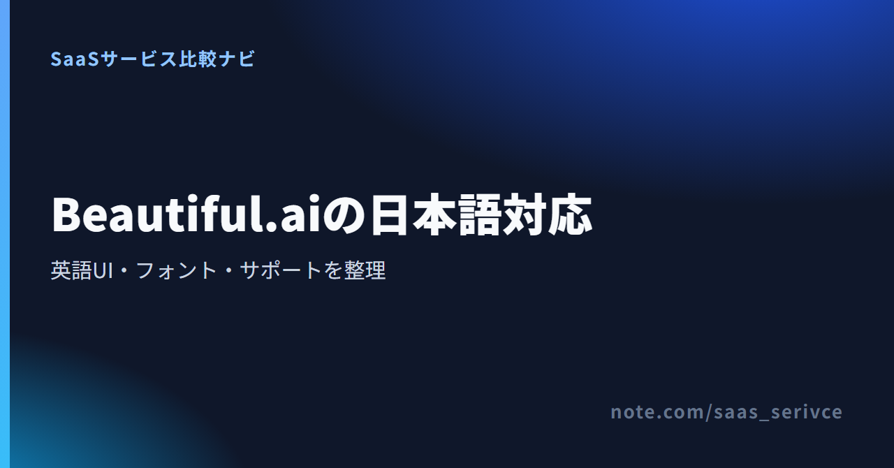

Beautiful.aiで日本語のプレゼン資料を作りたくても、「日本語対応」という言葉だけでは導入を決められません。日本語の文字を表示できることと、メニューや請求画面まで日本語で読めることは別だからです。
Beautiful.aiの操作画面は英語ですが、日本語の文字を含む資料は作成できます。AIによる文章の書き換え・翻訳や、日本語を表示するためのCJK Font設定も用意されています。ただし、英語の操作画面やヘルプを避けたいなら、最初から日本語UIのあるGammaやCanvaを選ぶほうが合うでしょう。
Beautiful.aiは日本語の文字を含む資料を作れます。一方、操作画面は英語で、CJK Fontを選んでもメニューや設定画面が日本語に変わるわけではありません。
日本語への対応範囲は、次の5項目に分けて考えると、何が日本語で使えて何が英語のままなのかを整理でき、誤解を避けられます。
とくに注意したいのが、UIと資料内の文字の違いです。CJK Fontは中国語・日本語・韓国語の文字を資料内で扱うための設定であり、Beautiful.ai自体の表示言語を切り替える機能ではありません。
このツールが導入候補になるのは、英語のメニューを許容できることに加え、実際の資料作成で300以上のSmart SlideレイアウトやPowerPointの入出力を使いたい人です。編集可能なPowerPoint出力はPro、Team、Enterpriseで提供されています。
反対に、料金、請求、解約、問い合わせまで日本語で完結させたい人には負担が残ります。社内メンバー全員が英語UIを使えるかも、個人利用とは別に確認が必要です。
公式サイトも英語です。新規登録はカード登録が必要な14日間のProトライアルから始まり、Basicは解約後の移行先として案内されています。
Beautiful.aiには、公式の日本語UIや表示言語を日本語へ切り替える設定が確認できません。ブラウザの翻訳機能を使っても、Beautiful.ai公式の日本語UIになるわけではありません。
公式サイト、操作画面、ヘルプセンターは英語です。たとえば日本語フォントの設定でも、Brand Kit、Edit Brand Kit...、Typography、CKJ Font、Update Presentation Themeという英語の項目をたどります。
解約や請求に関するヘルプ記事も英語で提供されています。資料内に日本語を入力できることと、設定・契約管理を日本語で行えることは分けて判断してください。
ブラウザ翻訳は英語ページを読む補助になりますが、Beautiful.aiが提供する言語設定ではありません。公式の日本語UIや言語切替が確認できない以上、製品内の英語表記が日本語へ正式対応したとはみなせません。
Proトライアル中は、資料作成だけでなく、Brand Kitでのフォント設定とPowerPoint出力まで確認しておきます。公式ヘルプでは、トライアルやProを解約するとBasicへダウングレードすると案内しています。資料作成以外のアカウント管理も含め、継続しない場合の手順を英語でたどれるかが判断材料になります。
日本語の文章を資料に入れること、AIで文章を書き換えたり翻訳したりすること、操作画面を日本語で使うことは別々に判断します。PowerPoint出力は有料プランで案内されています。
資料内の見出しや本文に使う文字には、中国語・日本語・韓国語向けのフォントを設定できます。日本語の文章を表示できますが、公式情報だけでは個々の原稿での文字組みまでは判断できません。トライアルでは、実際に使う見出しと本文を入れて表示を確かめる必要があります。
AI機能では、選択した文章、スライド単位、プレゼンテーション全体の書き換えや翻訳ができます。ここで扱うのは資料内の文章であり、メニュー、設定、請求、ヘルプを日本語化する機能ではありません。翻訳結果は、固有名詞や重要な表現を中心に人が見直してください。
編集可能なPowerPointへの書き出しは、Pro、Team、Enterpriseで案内されています。公式情報は日本語フォントや改行位置の再現性まで保証していないため、PowerPoint納品が前提なら、CJK文字を含む短い資料をPPTXへ書き出し、フォントと改行を確認してから本番へ進むのが確実です。
日本語の文字を表示するには、Brand KitのTypographyから「CKJ Font」を選びます。この設定で変わるのは資料内のフォントで、操作画面の言語ではありません。
公式ヘルプの現行手順は、Brand Kit → Edit Brand Kit... → Typography → CKJ Font → Update Presentation Themeです。画面上の表記は「CKJ Font」で、中国語・日本語・韓国語の文字に使うフォントを指定します。日本語専用のUI設定ではありません。
CKJ Fontを選んだ後は、普段使う分量の見出しと本文を入れ、フォント、改行、文字切れを確認します。PPTXで納品する場合は、同じ資料を書き出した後にも見直します。Beautiful.ai上とPowerPoint上で日本語の見え方が同じだとは、公式情報だけでは断定できません。
CKJ Fontを設定しても、メニューや料金画面、ヘルプセンターは英語のままです。AIの出力言語やサポートの回答言語を日本語へ固定する設定でもありません。「日本語フォントがある」ことと「日本語UIがある」ことは明確に分けてください。
公式の問い合わせ案内は英語ページで、メールとAIチャットの窓口があります。一方、日本語での回答、日本発行カード、請求書対応は確認できていません。
ヘルプセンターは英語で、製品や請求に関する窓口としてメール（support@beautiful.ai）とAIチャットが案内されています。日本語のヘルプページは確認できません。
公式情報には、日本語での受付・回答が可能かどうかの明記がありません。英語ページに問い合わせ窓口があることと、日本語サポートを受けられることは別です。日本語対応が導入条件なら、契約前に窓口へ可否を照会してください。
料金表示はUSDです。日本発行カードの利用可否と対応ブランド、請求書払いの可否は、公式情報では確認できませんでした。カード会社の換算レートや手数料で日本円の請求額も変わるため、これらが導入条件になる場合は申し込み前に問い合わせ窓口へ照会してください。
新規アカウントは、カード登録が必要な14日間のProトライアルから始まります。BasicはトライアルまたはProの解約後に移る無料のアカウント区分で、合計100スライドまでです。
Basicは、トライアルまたはProを解約した後の移行先として案内されており、アカウント全体で合計100スライドまで使えます。月ごとに100枚へ戻る枠ではありません。公式ブログでは新規アカウントは14日間のProトライアルから始まると説明されているため、Basicをカード不要の新規登録手段としては案内できません。
Proトライアルは14日間で、開始時にデビットカードまたはクレジットカードの登録が必要です。期間内に解約しなければ有料契約へ自動的に移ります。試し始めた日に終了日を控え、継続判断の日を数日前に設定しておくと、確認不足のまま課金される事態を避けられます。
Proを解約するとBasicへダウングレードします。作成済みの資料を今後どの範囲で扱えるかも含め、解約画面に表示される内容を読んでから手続きを確定してください。
Proの年払い価格は、公式ページ間で表示が一致していません。そのため、この記事では特定の年払い価格を採用しません。契約時は、実際の購入画面に表示される金額、請求周期、自動更新の条件をあわせて確認します。
試用から継続までを整理する際は、Basic、Proトライアル、有料プランの違いを一緒に確認してください。
新規登録の入口はProトライアルです。自動課金の条件を理解したうえで必要な機能を試し、継続しない場合は期間内に解約してください。
英語UIが導入の妨げになるなら、日本語UIのあるGammaとCanvaが候補です。AIプレゼン作成を中心に選ぶならGamma、プレゼン以外のデザイン制作もまとめたいならCanvaと分けられます。
Gammaは、公式サイトと料金ページに日本語表示があり、アプリのUIも日本語へ切り替えられます。日本語版のヘルプセンターも用意されているため、Beautiful.aiの英語メニューや英語ヘルプが負担になる人には比較しやすい候補です。
無料プランはクレジットカード不要で始められ、PPTXの取り込みと書き出しにも対応しています。一方、無料プランのクレジットは毎月補充されず、書き出しにはGammaのロゴが入ります。日本語UIだけで決めず、AIを使う頻度とロゴの扱いまで見て選びましょう。
Canvaは日本語UI、日本語サイト、日本語のヘルプページがあり、常設の無料プランも提供しています。プレゼンだけでなく、SNS画像、動画、印刷物なども同じ環境で作りたい場合に向く選択肢です。
PowerPoint形式の書き出しは無料プランを含む全プランで利用できます。ただし、PowerPointで開くとフォントやレイアウトがずれたり、アニメーションが再生されなかったりする場合があると案内されています。代替先として検討する場合も、最終納品がPPTXなら書き出し後の確認は省けません。
Beautiful.aiは日本語の資料を作れますが、操作画面とヘルプは英語が中心です。英語UIを受け入れて300以上のSmart SlideレイアウトやPowerPoint入出力を使いたい人が候補にでき、日本語UIを優先するならGammaやCanvaが合います。
申し込み前に、次の5点を一つずつ確認しておくと選択がぶれません。
英語UIを受け入れ、300以上のSmart SlideレイアウトやPro以上の編集可能なPowerPoint出力を使いたいなら、Beautiful.aiが具体的な検討候補になります。日本語UIでAIプレゼンを作り、カード不要の無料プランから始めたいならGamma、プレゼン以外のデザインも同じ環境で扱いたいならCanvaが比較対象です。
まず英語UIと日本語フォントの扱いを確かめ、要件に合わなければ日本語UIのある代替へ進んでください。